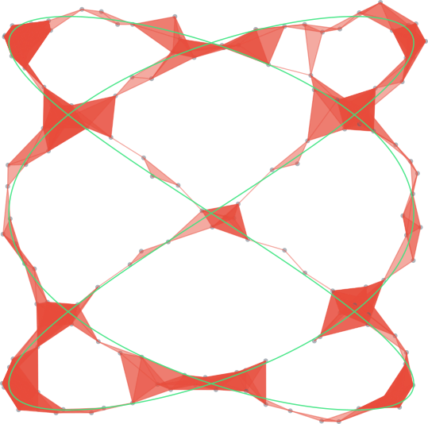

Topological Data Analysis (TDA)
(Shape Reconstruction)
Dr.School of Information, UCB
September 30, 2021
Slides: smajhi.com/21-fa-hunter
Collaborators
Carola Wenk
Tulane University
(
Brittany Fasy
Montana State U
Jeff Vitter,
U of Mississippi
Md. Nurujjaman
National Institute of
Technology
India
Erin Chambers
St. Louis University
Liz Munch
Michigan State U
The Manifesto
- Introduction to TDA
- The Reconstruction Problem
- Vietoris-Rips Complex
- A Possible Solution
- Opportunities in TDA
- Questions
Topological Data Analysis (TDA)

-
Computational Topology
> algorithmcally compute various topological invariants, e.g., homology groups, Betti numbers, Euler characteristic, etc -
Applied Topology
> apply topological ideas in sensor network, motion planning in robotics, configuration spaces etc -
TDA
> learning from big data, (stratified) manifold learning, shape reconstruction and comparison, and so much more...
Shape Reconstruction
Shapes


Smooth Manifolds (the good ones)
Our shapes of interest (the ugly ones)
Geodesic Spaces
The Reconstruction Problem

Noisy Sample

Sample from

GPS Traces Berlin

Reconstructed Map or Road-Network
Problem Statement
- Let $X$ be a
hidden geodesic subset of $\mathbb{R}^N$ - We have a sample or a point-cloud $(S,\|\cdot\|)$
- $S$ is reasonably dense around $X$.
- Compute
$H_*(X)$ and/or$\pi_*(X,b)$ from $S$ - Construct $\widetilde{X}$
homotopy equivalent to $X$ - $\widetilde{X}$ has a
geometrically-close
embedding in $\mathbb{R}^N$
Density via Hausdorff Distance
$\max\{$
Vietoris-Rips Complex

Geodesic Spaces
small $\epsilon$ + dense sample trick
does not work
😢
Our Approach
- $X\subseteq\mathbb{R}^N$ is a
geodesic subspace $(X,d_L)$ -
Distortion $\delta$ is finite -
Convexity radius $\rho$ is positive - $d_H(X,S)$ is small
Topological Reconstruction
Geometric Reconstruction
Remarks on Reconstruction
- Our geometric reconstruction works for planar graphs. Spatial graphs? My very recent work!
- Geometric reconstruction of higher-dimensional objects, like embedded simplicial complexes.
- Incorporate statistical treatments.
- The visualization tool is available as a webapp (github.com/sushovan4/shape-reconstruction). Need volunteers to extend it.
Opportunities
- Companies like Ayasdi are hiring topological data scientists and interns
- Open-source projects in TDA: Gudhi (C++), Scikit-tda (Python), tdajs (Typescript/JS)
- Graduate schools like OSU, Michigan S, Duke, Montana State, Tulane have TDA grants/projects
-
I also have some cool problems and projects (theory and
application)
smajhi@berkeley.edu
References
-
Adams_2019 -
fasy2018reconstruction -
fw17
QUESTIONS.